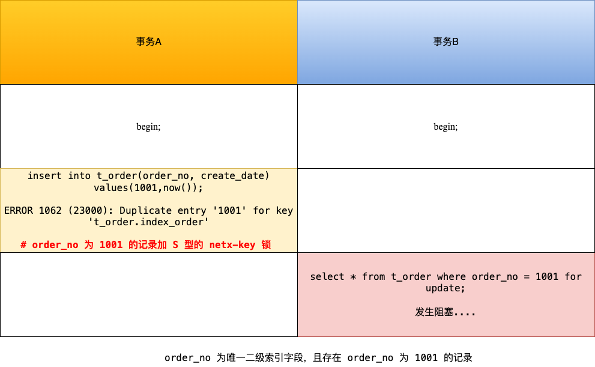

MySQL 面试题目汇总
本文整理了 MySQL 的相关问题，以便更深入掌握 MySQL。
SQL 语句分类？
主要分为三类，DDL，DML 和 DCL。
内连接和外连接的区别？
内连接只包含符合条件的元组，外连接则还包含了哪些不符合条件的元组。
内连接中自然连接和等值连接的区别？
自然连接会去除相同列，等值连接则不会。
Union 和 Union All 的区别？
前者是集合并，后者是包并，后者执行速度更快。
MySQL 数值类型有哪些？
TINYINT，SMALLINT，MEDIUMINT，INT，BIGINT，FLOAT，DOUBLE，DECIMAL。
DECIMAL（20，9）需要多少字节表示其数值部分？
DECIMAL 采用四字节存储 9 位数字的方式进行存储，小数部分需要 4 字节，整数部分共 11 位，低 9 位 4 字节，高 3 位需要 2 字节，一共需要 4 + 4 + 2 = 10 字节。DECIMAL 负数存储只需要将每个字节取反即可。
INT(5) 和 INT 区别？
表示数据上没有什么不同，INT(5) 在展示小于 5 位的数字时，会进行空格填充，并且依旧能够显示大于 5 位的整数。
MySQL 日期类型有哪些？
DATE，TIME，YEAR，DATETIME，TIMESTAMP。
在 MySQL 5.6 之前，为什么 DATE，TIME 各自需要 3 个字节，而 DATETIME 需要 8 个字节？
DATE/TIME 是转换到对应天或者秒来计算的，只需要 3 个字节足矣；而 DATETIME 中 DATE 保存方式是 YYYY×10000 + MM×100 + DD，需要四字节，时间整数表示 HH×10000000 + MM×100000 + SS * 1000，同样四字节。
MySQL 中的字符串/字节串类型？
CHAR，VARCHAR，TINYTEXT，TEXT，MEDIUMTEXT，LONGTEXT，TINYBLOB，BLOB，MEDIUMBLOB，LONGBLOB。
char(n) 和 varchar(n) 的区别？
前者表示定长，数据长度不够时会补空格填充，后者则是变长，严格存储对应长度的字符串，还会记录 1 或 2 个字节的长度值。
MySQL 复合类型有哪些？
ENUM 和 SET。ENUM 规定数据只能在枚举值中，并且存储上按照整数存储，因此 enum(‘male’, ‘female’) 中的 male 实际存储的是 1，female 实际存储的是 2，
''空字符串存储 0，NULL将被定义为 NULL。SET 则是定义集合，会自动去除重复值。MySQL 中如何获取 DATETIME 类型对应的 DATE？
可以通过 date_format(datetime, ‘%Y-%m-%d’) 获取对应的字符串，然后通过 str_to_date 即可。
MySQL 有哪些存储引擎（表类型），各自的优缺点分别是什么？
- MyISAM：不支持事务、也不支持外键，其优势是访问的速度快，对事务完整性没有要求或者以 SELECT、INSERT 为主的应用基本上都可以使用这个引擎创建表
- InnoDB：提供了具有提交、回滚和崩溃恢复能力的事务安全，锁粒度可以达到行级锁。但是对比MyISAM 的存储引擎，InnoDB 写的处理效率差一些，并且会占用更多的磁盘空间以保留数据和索引
- MEMORY：使用存在于内存中的内容来创建表。每个MEMORY 表只实际对应一个磁盘文件，格式是
.frm。MEMORY 类型的表访问非常快，因为它的数据是放在内存中的
TEXT 和 BLOB 的异同点？
都是用于存储较大的数据，TEXT 用于存储字符数据，如一篇文章或者日记，BLOB 则用于存储二进制文件，如图片。
为什么删除 TEXT 和 BLOB 数据后，需要及时使用
OPTIMIZE TABLE命令？在执行删除操作之后，会在数据表中留下很大的空洞，可以定期使用 OPTIMIZE TABLE 来进行碎片整理。另外，可以将 TEXT 和 BLOB 列分离到单独的表中，减少主表的碎片。
如何选择日期类型？
根据实际需要选择能够满足应用的最小存储的日期类型。如果记录的日期需要让不同时区的用户使用，那么最好使用 TIMESTAMP，因为日期类型中只有它能够和实际时区相对应。
如何选择字符集？
如果需要处理各种各样的文字，选择 utf8 编码；如果应用涉及已有数据的导入，需要考虑兼容性；如果需要考虑对字符串的比较排序等操作，可以选择定长的编码集。
MySQL 中的字符集和校对规则区别？
字符集用于定义 MySQL 存储字符串的编码格式，校对规则用来定义字符串的比较方式，通常以字符集开始，以
_ci（大小不敏感），_cs或者bin结束。MySQL 4 个级别的字符集设置？
服务器级别，数据库级别，标记别和列级别。
如果原来的数据库中存在部分数据，想要修改字符集，正确的做法是？
直接使用
alter database/table修改字符集并不能修改之前已经插入的字符串，需要先导出数据，然后手动修改字符集，最后再导入即可。BTREE 索引和 HASH 索引区别？
HASH 索引适用于点查询，BTREE 索引适用于范围查询。
为什么说不要过度使用索引？
每次插入数据的时候需要更新相关索引，造成插入速度变慢；并且还会消耗大量的磁盘空间。
MySQL 已经提供了表结构，为什么还提供视图这一概念？
让终端用户直接使用视图而不是表，可以带来以下优点：简单，安全，数据独立。
如何保证用户对视图里面的数据修改操作是合法的，满足视图定义条件的？
可以添加
WITH [LOCAL | CASCADE] CHECK OPTION，用于是否允许更新数据使记录不再满足视图的条件，LOCAL 只需要满足本视图即可，CASCADE 则必须满足针对该视图的所有视图的条件才可以更新。触发器发生时间，针对的操作以及使用限制？
[BEFORE | AFTER] [INSERT | DELETE | UPDATE]，在触发器中，可以使用 OLD 和 NEW 来引用发生变化的记录。触发器中不能显式或者隐式方式开启事务，并且其可能会影响性能。MySQL 提供的锁定级别有哪些？
对于 MyISAM 和 MEMORY 引擎，支持表级别锁定；对于 BDB 引擎，支持表数据的页级别锁定；对于 InnoDB 引擎，支持行级锁定。
MySQL 是如何支持分布式事务的？
通常涉及到一个事务管理器和多个资源管理器，采用两阶段提交协议进行提交。
SQL 预计中存在的安全问题和应对方式？
SQL 注入攻击，可以采取以下措施（基本都是进行转义）：
- PrepareStatement + Bind-Variable：通过转义用户输入的参数防护
- 使用应用程序提供的转换函数：如
mysql_real_escape_string() - 自定义：正则校验，特殊字符转义等
SQL Mode 的功能？
- 设置不同的 SQL Mode，可以设置不同程度的数据校验，保证准确性
- 在数据迁移之前，改变 SQL Mode 为其他数据库的数据格式，可以便于数据迁移
什么是 MySQL 分区，分区有哪些好处？
采用分而治之的思想，将表分成一系列的分区，分区对于应用来说是完全透明的，有利于管理非常大的表
- 跨多个磁盘，能获得更大的吞吐量
- 和单个磁盘相比，能存储更多的数据
- 优化查询，删除等操作，如通过删除分区直接删除相关的数据
常见的分区类型有哪些？
RANGE 分区和 HASH 分区，前者指定连续区间范围，后者则是通过哈希算法将热点数据打散，确保负载均衡。另外也有 LIST 分区，COLUMNS 分区，KEY 分区。
InnoDB 引擎支持哈希索引吗？
并不支持让用户定义一个索引的类型为哈希索引，但是其内部使用了自适应哈希算法，以加快查询语句的速度。
SQL 语句优化的一般步骤是什么？
- 通过使用
SHOW [SESSION | GLOBAL] STATUS命令了解各种 SQL 执行频率和执行信息 - 定位执行效率缓慢的语句，可以通过启动慢查询日志来实现
- 通过 explain 语句来分析低效 SQL 的执行计划，采取相应措施
- 通过使用
索引失效的常见场景？
- 以 % 开头的 LIKE 查询不能够利用 B-Tree 索引
- 对索引使用函数，或者使用表达式
- 对索引隐式类型转换：在遇到字符串和数字比较的时候，会先把字符串转为数字，然后再进行比较
- 联合索引非最左匹配
- 用 or 分割开的条件，如果 or 前的条件中的列有索引，而后面的列中没有索引
如何优化分页查询？
- 在索引上完成排序分页的操作，最后根据主键关联回原表查询所需要的其他列内容
- 把 LIMIIT 查询转换成某个位置的查询，如根据上次的查询的最大 id 计算下一次的最大的值
如何使用 SQL 语句提取随即行？
使用 RAND() 提取随机行：
select * from category order by rand() limit 10，适用于小表select * from category where rand() <= 0.006 limit 10，适用于大表
如何对数据库进行优化？
- 优化表的数据类型，如在设计表的时候需要考虑字段的长度留有一定的冗余
- 通过拆分提高表的访问效率，如水平拆分和垂直拆分，缺点是查询所有数据需要联合
- 逆规范化，规范化程度越高，产生的关系就越多，从而导致表之间的连接操作越频繁，而导致性能下降，可以考虑增加冗余列，派生列等
- 使用中间表提高统计查询速度，如查询最近一周的消费情况，就可以在原来的消费表上建立起来，可以进行隔离，另外中间表上也可以添加索引
MySQL 中提供哪几种粒度的锁？
- 表级锁：如 MyISAM 和 MEMORY 引擎，开销小，加锁快；不会出现死锁；锁定粒度大，发生锁冲突的概率最高，并发度最低
- 行级锁：如 InnoDB 引擎，开销大，加锁慢；会出现死锁；锁定粒度最小，发生锁冲突的概率最低，并发度也最高
- 页级锁：如 BDB 引擎，开销和加锁时间界于表锁和行锁之间；会出现死锁；锁定粒度界于表锁和行锁之间，并发度一般
MyISAM 如何加表锁的？
- 隐式：执行查询语句时，自动加读锁；执行更新操作时，自动加写锁
- 显式：LOCK TABLES tbl_name [READ | WRITE] [LOCAL]，LOCAL 参数允许用户在表尾并发插入记录
MyISAM 中的系统变量 concurrent_insert，作用是什么？
用于控制并发插入：
- 设置为 0 时，不允许并发插入
- 设置为 1 时，如果 MyISAM 表中没有空洞(即表的中间没有被删除的行)，MyISAM允许在一个进程读表的同时，另一个进程从表尾插入记录。默认项
- 设置为 2 时，无论 MyISAM 表中有没有空洞，都允许在表尾并发插入记录
MyISAM 中写锁优先还是读锁优先？能否进行配置？
如果同时存在一个写进程和一个读进程获取相同项的锁，MySQL 会优先将锁给写进程。可以通过调整low-priority-updates变量改变调度行为。
InnoDB 存在哪些锁模式？
行锁有共享锁和排他锁，表锁（意向锁）有 IS 和 IX 锁，意向锁是自动加的。对于更新操作，会加上 X 锁，对于普通的 SELECT 语句，则不会加任何锁，但是可以通过 SELECT … LOCK IN SHARE MODE 获取 S 锁，通过 SELECT … FOR UPDATE 获取 X 锁。
InnoDB 行锁有哪几种类型？
- Record Lock：对索引项加锁
- Gap Lock：对索引项之间的“间隙”、第一条记录前的“间隙”或最后一条记录后的“间隙”加锁
- Next-key Lock：前两种的组合，对记录及其前面的间隙加锁
行锁的实现方式是给索引上的索引项加锁来实现的，这意味着只有通过索引条件检索数据，InnoDB 才使用行级锁，否则，InnoDB 将使用表锁。
MySQL 中存在死锁吗？
MyISAM 是 deadlock free 的，这是因为 MyISAM 一次获取需要的所有锁，而在InnoDB中，锁是逐步获得的。可以使用顺序加锁，申请大粒度锁等情况规避死锁。
MySQL 体系概览？

InnoDB log 优化方案？
- innodb_flush_log_at_trx_commit：0 表示 commit 到 innodb 内存，每秒写入disk file，1 表示 commit 到 disk file，2 表示 commit 到 os cache，每秒写入 disk file
- 设置 log file size，控制检查点：日志文件切换会导致检查点变化，会导致缓存页小批量刷新，降低性能，通常每半个小时写满一个日志文件较好
- 调整 innodb_log_buffer_size：默认 8 MB，对于具有大量更新记录的事务，可以增加该值，减少对磁盘写入次数
MySQL 并发相关的参数？
- 调整 max connections，提高并发连接
- 调整 back_log：积压请求栈大小
- 调整 table_open_cache：控制所有 SQL 执行线程可打开表缓存的数量
- 调整 thread cache size
- innod lock wait timeout，设置锁超时时间
MyISAM 如何进行内存优化？
MyISAM 使用 key buffer 缓存索引块，对于数据块，则依赖于 IO 缓存，优化策略有：
- 调整 key_buffer_size 大小
- 调整中点插入策略：对 LRU 的改进
- 调整 read_buffer_size 和 read_rnd_buffer_size
read_rnd_buffer_size 作用？
可用于优化 order by 的语句，因为 sort 后的数据是以 key-value 的形式存在的，使用这些行指针去读取数据，将是以指针数据物理的顺序去读取，很大程度上是随机的方式读取数据的。MySQL 从 sort_buffer 中读取这些行指针数据，然后通过指针排序后存入 read_rnd_buffer 中，之后再通过指针读取数据时，基本上都是顺序读取了。
InnoDB 内存优化？
用一块内存区做 IO 缓存池，该缓存池不仅用来缓存 InnoDB 的索引块，而且也用来缓存InnoDB的数据块，缓存池逻辑上由 free list、flush list 和 LRU list 组成。InnoDB 使用的 LRU 算法是类似两级队列的方法
- innodb_buffer_pool_size
- 调整 old sublist 大小
- 调整 innodb_old_blocks_time 的设置：确定从 old sublist 到 young sublist 的时间
- 调整缓存池数量 innodb_buffer_pool_instances
- 控制 innodb buffer 刷新，延长数据缓存时间
- 调整排序缓存大小 sort_buffer_size 和连接缓存大小 join_buffer_size
- InnoDB doublewrite：原因是 MySQL 的数据页大小（一般是 16KB）与操作系统的 IO 数据页大小（一般是 4KB）不一致，无法保证 InnoDB 缓存页被完整、一致地刷新到磁盘。原理是用系统表空间中的一块连续磁盘空间（100个连续数据页，大小为 2MB）作为 doublewrite buffer，当进行脏页刷新时，首先将脏页的副本写到系统表空间的 doublewrite buffer 中，然后调用 fsync 刷新操作系统 IO 缓存，确保副本被真正写入磁盘。
MySQL 如何优化磁盘 IO 速度？
- 使用 Symbolic Links 分布 IO：默认情况下，数据库名和表名对应的就是文件系统的目录名和文件名，但是这样不利于多磁盘并发读写的能力，可以使用符号链接将不同的数据库指向不同的物理磁盘，达到分布磁盘 IO 的目的。
- 禁止操作系统更新文件的 atime 属性：LINUX 系统下，每次读取一个文件，操作系统就会将读操作的时间写回到磁盘上，这可能会影响 IO 性能。
- 使用裸设备存放 InnoDB 的共享表空间：对于 MyISAM，数据文件的读写完全依赖于操作系统，但是对于 InnoDB 来说，其自己实现了数据缓存机制，操作系统的缓存系统可能对其有反作用，可将数据放倒 Raw Device 上。
在应用层面上，如何对 MySQL 服务进行优化？
- 使用连接池，减少建立销毁连接的开销
- 减少对 MySQL 的访问：增加 CACHE 层，使用查询缓存（适用于更新不频繁的表）
- 负载均衡：利用 MySQL 复制实现读写分流，采用分布式数据库架构
MySQL 常用工具？
mysql，mysqladmin，mysqlbinlog，mysqldump，mysqlimport，mysqlshow。
MySQL 中存在哪些日志？
- 错误日志：记录了当mysqld启动和停止时，以及服务器在运行过程中发生任何严重错误时的相关信息
- 归档日志：记录了所有的 DDL（数据定义语言）语句和 DML（数据操纵语言）语句，但是不包括数据查询语句。此日志对于灾难时的数据恢复起着极其重要的作用。分为 STATMENT ，ROW，MIXED 格式
- 查询日志：查询日志记录了客户端的所有语句，而二进制日志不包含只查询数据的语句
- 慢查询日志：记录了所有执行时间超过参数 long_query_time 设置值并且扫描记录数不小于min_examined_row_limit 的所有 SQL 语句的日志。
MySQL 日志查询分析工具？
mysql-explain-slow-log，myprofi，mysqlsla。
MySQL 中的逻辑备份和恢复如何实现？
可以通过 mysqldump&mysqlimport 实现，另外还需要执行日志重做
mysqlbinlog binlog-file | mysql -u root –p***，可以采用基于时间点恢复或者基于位置恢复两种策略。MySQL 中的物理备份和恢复如何实现？
- 冷备份：就是停掉数据库服务，cp 数据文件的方法
- 热备份：
- InnoDB：使用 ibbackup 或者 Xtrabackup
- MyISAM：本质是将要备份的表加读锁，然后再复制数据文件到备份目录
MySQL 如何实现表的导出和导入？
SELECT …INTO OUTFILE … & LOAD DATA INFILE…- mysqldump & mysqlimport
MySQL 如何实现权限管理的？
首先对连接的用户进行身份认证，然后对通过的用户赋予对应权限即可。在 MySQL 内部，存在 user，host 和 db 这三个权限表，对于通过认证的用户要查看某个权限只需要访问对应的权限列即可。
忘记 MySQL 的 root 密码怎么办？
首先手动 kill 掉 MySQL 进程，接着使用–skip-grant-tables选项重启登陆到 MySQL 服务，之后就可以更新密码，并且刷新权限表。
mysql.sock 丢失后如何连接数据库？
使用其他协议如
--protocol=TCP|PIPE|SOCKET。MySQL 复制的优点？
- 主库出现问题，可以切换到从库提供服务
- 可以在从库上执行查询操作，降低主库的访问压力
- 可以在从库上执行备份，以避免备份期间影响主库的服务
MySQL 如何进行复制的？
首先，MySQL 主库会在数据变更的时候将其记录在 Binlog 中，主库推送 binlog 中的事件到从库的中继日志 Relay Log，之后从库根据 Relay Log 重做数据变更操作，通过逻辑复制以此达到数据一致。

MySQL 复制的三种架构？
- 一主多从复制架构：对实时性要求不是特别高的读请求通过负载均衡分布到多个从库上，降低主库的读取压力
- 多级复制架构：解决了一主多从场景下，主库的 I/O 负载和网络压力，当然也有缺点：MySQL 的复制是异步复制，多级复制场景下主库的数据是经历两次复制才到达从库
- 双主复制：主库 Master1 和 Master2 互为主从，所有 Web Client 客户端的写请求都访问主库 Master1，而读请求可以选择访问主库 Master1 或 Master2
MySQL 三种复制模式？
- 异步复制：主库在执行完客户端提交的事务后会立即将结果返给给客户端，并不关心从库是否已经接收并处理，主如果 crash 掉了，此时主上已经提交的事务可能并没有传到从库上，造成数据不一致
- 全同步复制：当主库执行完一个事务，所有的从库都执行了该事务才返回给客户端。因为需要等待所有从库执行完该事务才能返回，所以全同步复制的性能必然会收到严重的影响
- 半同步复制：主库只需要等待至少一个从库节点收到并且 Flush Binlog 到 Relay Log 文件即可，主库不需要等待所有从库给主库反馈
MySQL Cluster 如何实现？
SQL 节点和数据节点。前台应用一定的负载均衡算法将对数据库的访问分散到不同的 SQL 节点上，然后 SQL 节点对数据节点进行数据访问并从数据节点返回结果，最后 SQL 节点将收到的结果返给前台应用。数据节点（NDB 节点）实现了数据的冗余存储。
高可用架构有哪些？
- MMM 架构：由于 MMM 无法完全地保证数据一致性，所以 MMM 适用于对数据的一致性要求不是很高，但是又想最大程度的的保证业务可用性的场景；对于那些对数据的一致性要求很高的业务，非常不建议采用 MMM 这种高可用性架构。
- MHA 架构：目前在 MySQL 高可用方面是一个相对成熟的解决方案，MHA能在最大程度上保证数据的一致性，以达到真正意义上的高可用。其从宕机崩溃的 master 保存二进制日志事件，识别含有最新更新的 slave，应用差异的中继日志（relay log）到其他 slave，应用从 master 保存的二进制日志事件，提升一个 slave 为新 master，使其他的 slave 连接新的 master 进行复制。
能说下 MyISAM 和 InnoDB 的区别吗？
- MyISAM 支持全文索引，压缩表和空间函数等，但是不支持事务和行级锁，通常用于大量查询少量插入的场景，MyISAM 的索引和数据是分开的；
- InnoDB 采用聚簇索引，其支持事务，外键和行级锁，并且通过 MVCC 来支持高并发。
使用 VARCHAR(5) 和 VARCHAR(200) 存储 “hello” 的空间开销是一样的。那么使用更短的列有什么优势吗？
事实证明有很大的优势。更长的列会消耗更多的内存，因为 MySQL 通常会分配固定大小的内存块来保存内部值。尤其是使用内存临时表进行排序或其他操作时会特别糟糕。在利用磁盘临时表进行排序时也同样糟糕。
说下 MySQL 的索引有哪些吧，聚簇和非聚簇索引又是什么？
索引按照数据结构来说主要分为 B+Tree 和哈希索引，聚簇索引是索引和数据存放在一起。
主键索引自增有什么优点？
在插入数据的时候，可以直接将数据追加到最后一个数据页里面，不涉及数据在数据页中的移动，如果不使用自增主键，在插入的时候可能会造成页分裂等耗时操作。
空闲连接的查看和解决方式？
通过
show processlist查看空闲连接，MySQL 规定了空闲连接的默认最大时长（8 小时），用户也可主动在执行kill connection +<id>来终结空闲连接。那你知道什么是覆盖索引和回表吗？
覆盖索引指的是通过索引就可以取到所需的数据，如果所需数据不能通过覆盖索引，就需要访问聚簇索引获取相应的数据，该行为称为回表。
锁的类型有哪些呢？
从粒度上，分为全局锁，表级锁，行锁；从加锁方式上，分为乐观锁和悲观锁；从是否共享，分为共享锁和排他锁。
你能说下事务的基本特性和隔离级别吗？
ACID，四种隔离级别分别消除了四种不一致现象。
那ACID靠什么保证的呢？
原子性通过 undolog 保证，隔离性通过 MVCC 和锁机制实现，持久性通过 redolog 实现，保证了事务的持久性、原子性、隔离性之后，一致性才能得到保障。
那你说说什么是幻读，什么是MVCC？
幻读是指两次读取中读到了新插入的数据行，MVCC 实际上是为每个版本添加创建时间版本号，过期时间版本号，只有满足一定要求的事务才能读到对应的版本。
那你知道什么是 next-key lock 吗？
next-key lock 是 RR 下才有的锁，结合 MVCC 可以解决幻读的问题，其在一定条件下能够退化成记录锁或间隙锁。
MySQL 记录锁+间隙锁可以防止删除操作而导致的幻读吗？
可以，在 MySQL 的可重复读隔离级别下，针对「当前读」的查询语句会对索引加记录锁+间隙锁，这样可以避免其他事务执行「增、删、改」时导致幻读的现象。
分析以下问题：
- Q1: select * from t_table where a > 1 and b = 2，联合索引（a, b）哪一个字段用到了联合索引的 B+Tree？
- Q2：select * from t_table where a >= 1 and b = 2，联合索引（a, b）哪一个字段用到了联合索引的 B+Tree？
- Q3：SELECT * FROM t_table WHERE a BETWEEN 2 AND 8 AND b = 2，联合索引（a, b）哪一个字段用到了联合索引的 B+Tree？
- Q4：SELECT * FROM t_user WHERE name like ‘j%’ and age = 22，联合索引（name, age）哪一个字段用到了联合索引的 B+Tree？
答案：
- Q1 只有 a 字段用到了联合索引进行索引查询，而 b 字段并没有使用到联合索引。
- Q2 语句 a 和 b 字段都用到了联合索引进行索引查询（a = 1 时使用 b 字段索引）。
- Q3 语句 a 和 b 字段都用到了联合索引进行索引查询（a = 2 或 a = 8 时使用 b 字段索引）。
- Q4 语句 a 和 b 字段都用到了联合索引进行索引查询（对 name = j 的数据，此时使用 age）。
为什么说 MySQL 单表最好不要超过 2000 万？
MySQL 数据页大小大约是 16KB，分为索引页和数据页，索引页大约有 1000 数目，数据页假设有 16 条数据，对应的三层 B+ 树就是 1000 * 1000 * 16 = 1600 万，因此 MySQL 数据超过 2000 万可能会造成 B+ 树层数增加，而导致 IO 开销增大。
你们数据量级多大？分库分表怎么做的？
一般拆分顺序是先垂直后水平，水平分库一般通过哈希取模实现，为提高性能，可以引入一致性哈希。
那分表后的自增 ID 怎么保证唯一性的呢？
设定不同步长，分布式 ID 如雪花算法，不使用自增主键而是使用其他唯一数据列作为主键。
分表后非 sharding_key 的查询怎么处理呢？
对实时性要求不高的话，可以建立宽表；数据量不是很大的话，可以多线程扫表，然后再聚合结果。
说说 mysql 主从同步怎么做的吧？
主服务器写入 binglog 后，会创建 dump 线程推送其到从服务器，从服务器启动 IO 线程读取推送过来的 binglog，记录到 relay log 中继日志中，从服务器开启一个 sql 线程读取 relay log 并且执行，最后从服务器也记录自己的 binlog。主从同步分为全同步复制和半同步复制，前者需要所有从库执行完才返回客户端，后者至少收到一个从库的 ack 即可。
那主从的延迟怎么解决呢？
并不能解决，但是能尽量优化，如尽量减少或者不使用长事务。
查询缓存的作用？
查询的时候先查询缓存，但是在 MySQL 8.0 后，该功能被移除。缓存虽然能够提升数据库的查询性能，但是缓存同时也带来了额外的开销，每次查询后都要做一次缓存操作，失效后还要销毁。建议设置query_cache_type 变量为 DEMAND。
MySQL 引擎为什么采用该 B+ 树而不是 B 树？
- B+ 树磁盘 IO 更低，其内部节点全部是指针，没有实际数据，能够更快找到元素
- B+ 树查询效率更加稳定
- B+ 树遍历效率高（叶子节点通过指针相连）
MySQL 中的索引有哪些？
在存储层实现，不同的存储引擎具有不同的索引类型：
- B+ 树索引：主索引通常是聚簇索引，辅助索引通常需要回表，覆盖索引，组合索引
- 哈希索引：只支持点查询，不支持范围查询，同时不支持排序和分组操作
- 全文索引：用于查找文本中的关键词，通常采用倒排索引实现
- 空间数据索引（R-Tree）：多维索引，可用于存储地理数据
如何对查询语句进行优化？
- 减少请求的数据量，只返回必要的行数据和列数据
- 减少服务器扫描的行数，尽量通过覆盖索引
- 重构查询语句：切分大查询，分解大连接查询，将连接任务交给上层
事务的特性以及隔离级别？
ACID；未提交读，提交读，可重复读，可串行化。分别解决了脏读，不可重复读，幻读的问题。不可重复读和幻读容易混淆，不可重复读侧重于数据的修改，幻读侧重于数据的新增或删除。
什么是第一，第二类丢失更新问题？
第一类丢失更新：A 事务撤销时，把已经提交的 B 事务的更新数据覆盖了
第二类丢失更新：A 事务覆盖 B 事务已经提交的数据，造成 B 事务所做操作丢失
InnoDB 引擎中的锁粒度？
- Record Lock：锁定一个记录对应的索引，非主键索引加锁时可能也会对主键索引加锁
- Gap Lock：锁定索引之间的间隙，但是不包含索引本身
- Next-Key Lock：左开右闭区间，Gap Lock + Record Lock，加锁的基本单位
InnoDB 如何实现并发控制？
每个记录后面加上两个隐藏的列：trx_id 和 roll_pointer，修改记录事务号，通过 undo 日志串联版本
- 当前读：读取 ReadView 对应下合理的记录
- 快照读：读取记录当前的最新版本数据，可通过
lock in share mode, for update
数据切分的方式以及对应的优缺点？
垂直切分：可以让数据从大表切分成多个小表，但是获取全部数据可能需要进行 join 连接
水平切分：可以使用哈希取模，范围划分等方式，可以为表操作提供更高的吞吐率，但是可能需要引入分布式事务（XA 接口），需要在用户程序中进行连接，另外，需要生成唯一 ID，可以使用分布式 ID 生成器
MySQL 主从复制过程？
主要涉及三个线程，binlog dump 线程，IO 线程和 SQL 线程：
- IO 线程会请求 binlog，并且将得到的 binlog 写到本地的 relay-log 文件中
- 主库中的 binlog dump 线程会给从库的 IO 线程传送 binlog
- 从库中的 SQL 线程会读取 relay-log 文件中的日志，并且将其转换为 sql 语句逐一执行
关系数据库设计范式，是否是范式越高越好？
- 1NF：每个属性不可分割，可能存在数据冗余问题
- 2NF：消除非主属性对码的部分函数依赖
- 3NF：消除非主属性对于码的传递函数依赖，基本消除了各种异常
- BCNF：主属性不依赖于主属性
- 4NF：消除多值依赖
并不是范式越高越好，因为当冗余信息有价值或者能大幅度提高查询效率的时候，我们就可以采取反范式设计的优化。
explain 语句的作用以及对应的执行列信息？
可以使用 explain 分析 SQL 语句，查看执行计划，根据该信息进行优化。
主要包括的列有：select_type，possible_keys，key，rows，type，extra。
explain 中的 type 列有哪些值？
- system：只有一条数据的系统表
- const：主键或者唯一索引查询
- eq_ref：在进行联接查询时，使用主键或者唯一索引并且只匹配到一行记录的时候
- ref：使用非唯一索引
- range：索引范围查询
- index：跟全表扫描类似，只是扫表是按照索引顺序进行
- all：全表扫描，不走索引
explain 中的 extra 列有哪些值？
- using filesort：需额外的排序操作, 不能通过索引顺序达到排序效果
- using index：使用了覆盖索引
- using where：使用了 where 过滤数据
- using index condition：使用了索引，但是需要回表
- using temporary：建立临时表(temporary table)来暂存中间结果
- using join buffer：需要进行嵌套循环计算
使用索引的优缺点？
优点：提高数据检索的速度，降低 IO 成本；还能对数据进行排序，降低排序查询语句的执行时间
缺点：会占用部分空间；虽然提高了查询效率，但是降低了数据更新的效率
MyISAM 索引和 InnoDB 索引有什么区别？
MyISAM 索引：索引和数据分开存储在不同的文件中，叶子节点记录的是磁盘地址
InnoDB 索引：叶子节点存储的数据是整行的数据，称之为聚簇索引，为此，普通索引需要进行回表操作
假设存在表 t(a, b, c, d)，其中以 a 创建主键索引，以 (b, c, d) 创建组合索引，语句 select * from t where c = 0 执行过程中，有以下问题：
- 上述条件查询并不满足最左匹配原则，为什么查询的时候使用了索引？
- 为这个表增加 e 字段后，上述查询为什么变为全表扫描？
联合索引中有查询需要所有数据项，可以使用覆盖索引，但是其并不满足最左匹配，因此 type 是 index，而不是 ref，同时，组合索引中叶子节点信息量更大，主索引通常还包括了版本信息，事务 id，回流指针等等，因此选择组合索引；
加入 e 字段后，就不能使用覆盖索引了，此时就只能进行全表扫描。
SQL 查询语句执行过程？
通过连接器进行用户权限检查；检查缓存（query_cache_type = DEMAND）；词法语法分析，检查 SQL 语句正确性；优化器找到最佳的物理执行计划；调用存储引擎接口进行查询，返回结果（增量且逐步返回的过程）
慢 SQL 是什么，有什么危害，可能有哪些原因造成的，如何预防？
慢 SQL 就是执行时间远大于正常值的 SQL 语句；在高并发情况下，慢 SQL 出现后会阻塞大量正常的请求，造成大面积的超时和失败；可能由于创建太多索引，造成更新操作效率下降，或者是查询语句发生了索引失效；预防方式是打开慢 SQL 日志，设置慢 SQL 执行时间阈值，之后使用 explain 命令查看原因，今早优化慢 SQL 语句。
MySQL 索引失效发生的场景？
- 对索引进行运算，使用函数
- 对索引使用 <> 、not in 、not exist、!=
- 对索引进行前导模糊查询
- 隐式转换会导致不走索引，如
select '10' > 9会返回 1，说明字符串转换为数字格式 - 非索引字段的 or 连接
- 非最左前缀
假设存在表 t_record(id, age, name)，id 上存在主索引，age 上存在辅助索引，下列语句
1
select * from t_record where age > 10 offset 10000 limit 10;
在第一次执行的时候很慢，在第二次有了缓存之后却很快？有什么办法可以解决该问题？
对于 MySQL，上述语句会使用 age 上的索引，首先找到满足 age > 10 的第一个数据，然后向后遍历 10000 项数据，并且对每一项数据，都会进行回表操作，即使我们不需要这些数据。这样的话引入了大量的随机 IO，自然速度变慢。
产品上绕过，只提供上一页和下一页功能不需要回表，并且没有 offset，需要用户端配合
1
select * from t_record where id > last_id limit 10;
使用覆盖索引：不需要进行额外的回表操作，普适性更高
1
2select * from t_record where id in
(select id from t_record where age > 10 offset 10000 limit 10）;
InnoDB 是如何保证事务的 ACID 属性的？
- 持久性是通过 redo log （重做日志）来保证的
- 原子性是通过 undo log（回滚日志） 来保证的
- 隔离性是通过 MVCC（多版本并发控制） 和锁机制来保证的
- 一致性在满足持久性，原子性和隔离性情况下自然满足
事务的隔离级别有哪些，分别是为了解决哪些问题？
未提交读，提交读，可重复读，串行化；分别解决了脏读，不可重复读，幻读问题。
InnoDB 如何支持不同的隔离级别的？
- 未提交读：直接读取最新的数据
- 串行化：加读写锁实现
- 读提交和可重复读：通过 Read View 实现，读提交在每次读数据前生成一个 Read View，可重复读则在启动事务时生成一个 Read View，在之后都使用该 Read View
MVCC 是如何实现的？
通过表的隐藏列 trx_id 和 roll_pointer 实现，后者用于生成版本链，通过 trx_id 找到适应的版本数据。
ReadView 数据结构是怎样的，如何处理提交读和可重复读？
ReadView 的数据结构：
(creator_trx_id, running_trx_ids, min_trx_id, max_trx_id)，其中 max_trx_id 指的是创建 ReadView 时应该给下一个事务的 id 值：- 可重复读：遍历记录版本，直到找到 trx_id 小于等于 creator_trx_id 的记录
- 读提交：遍历记录版本，直到找到 trx_id 小于 max_trx_id，并且其不在 running_trx_ids 列表中的记录
什么是快照读，什么是当前读？
- 当前读：每次读取的都是当前最新的数据，但是读的时候不允许写，写的时候也不允许读包括，加锁
- select … lock in share mode/select … for update
- update, delete, insert
- 快照读：
- 在 RC 下，快照读和当前读读取的数据是一样的，都是最新的
- 在 RR 下（默认隔离级别），有可能读取的不是最新的数据
- 当前读：每次读取的都是当前最新的数据，但是读的时候不允许写，写的时候也不允许读包括，加锁
next-key 锁加锁的对象是什么，对于 update 语句如果没有使用 where 语句，会发生什么？
next-key 锁锁的是索引，而不是数据本身，如果 update 语句的 where 条件没有使用索引列，那么就会全表扫描，不仅加上行锁，还加上了间隙锁，相当于锁住整个表，直到事务结束时释放。因此，在线上千万不要执行没有带索引条件的 update 语句，不然会造成业务停滞。
InnoDB 是如何在可重复读的情况下消除幻读的？
在可重复读隔离级别下，普通的查询语句是快照读，其是不会看到别的事务新的插入的数据的，幻读的现象只能在当前读下产生。InnoDB 为了防止该问题，采用了 next-key 锁，下面的事务 A 会锁住 (2, +inf) 范围的记录，如果该期间有其他事务在这个锁住的范围插入数据就会被阻塞，从而解决了幻读现象。
txn A txn B begin;
select name from stu where id > 2 for update;begin;
insert into stu values(5, “小飞”);
BLOCKINGInnoDB 默认隔离级别是可重复读，但是很大程度上避免了幻读现象（并不是完全解决了）：
- 针对快照读，通过 MVCC 方式解决
- 针对当前读，通过 next-key 锁（记录锁 + 间隙锁）方式解决
InnoDB 在 RR 隔离级别下，幻读是否真的被解决了？
没有，只是很大程度上避免了幻读，但是没有完全解决幻读，如

MySQL 中的锁类型有哪些？
从锁粒度上看，主要可以分为全局锁，表级锁和行锁。
全局锁：
- 使用方法：
flush tables with read lock和unlock tables加锁和解锁，加锁后整个数据库就只处于只读状态，会阻塞其他线程对表的结构和数据的更改 - 应用场景：全库逻辑备份，通常在不支持 MVCC 的引擎中使用，而对于像 InnoDB 引擎，可以在 mysqldump 时加上
-single-transaction就能保证数据一致性 - 缺点：整个数据库只读状态，可能会造成业务停滞
表级锁：
表锁：
lock tables t_name read/write，其会限制本线程和其他线程的读写操作，可以通过unlock tables或者退出会话释放表锁元数据锁（MDL）：不需要显式使用 MDL，其根据如下规则加锁：
- 对一张表进行 CRUD 操作时，加的是 MDL 读锁
- 对一张表做结构变更操作的时候，加的是 MDL 写锁
MDL 在事务提交后才会释放，另外，MDL 写锁获取的优先级高于读锁，一旦出现 MDL 写锁等待，会阻塞后续该表的所有 CRUD 操作
意向锁：加锁规则如下：
- 在对某些记录加上共享锁之前，需要先在表级别加上一个意向共享锁
- 在对某些纪录加上独占锁之前，需要先在表级别加上一个意向独占锁
注意，普通的 select 是不会加锁的，因为其是利用 MVCC 实现，可以通过
lock in share mode或者select ... for update实现，意向共享锁和意向独占锁是表级锁，不会和行级的共享锁和独占锁发生冲突，而且意向锁之间也不会发生冲突，只会和共享表锁和独占表锁发生冲突，意向锁的目的是快速判断表里是否有记录被加锁AUTO-INC 锁：该锁在执行完插入语句后就会释放，而不是提交事务时释放。由于其是表级锁，会影响并发插入的性能，因此，MySQL 5.2 后的版本提供了轻量级的锁，其在申请完自增主键后就立即释放锁资源，这样在并发插入的时候，不能保证自增长的值是连续的，这在主从赋值的场景中是不安全的。可以通过设置 binlog_format = row 保证一致性
行级锁：InnoDB 才有，MyISAM 并没有行锁
记录锁：锁住一条记录，作用在索引上，存在 S 锁和 X 锁之分
间隙锁：锁定一个范围，间隙锁是兼容的，两个不同的事务可以持有公共的间隙锁，间隙锁本质上用于阻止其他事务在该间隙内插入新记录，而自身事务允许在该间隙内插入数据
Next-Key Lock：记录锁和间隙锁的组合，用左开右闭区间表示，是加锁的基本单位，但是可能会退化，普通的 select 语句是快照读，只有
select .. in share mode和select ... for update才会加锁插入意向锁：特殊的间隙锁，不同于间隙锁的是，该锁只用于插入操作，一个事务拥有插入意向锁，另外一个事务便不能拥有对应的间隙锁，下图假设 test 中的 id 最大值是 10，由于加锁 （0， +inf）发生死锁：

- 使用方法：
MySQL 中的锁退化是什么？在不同索引类型下如果进行锁退化？
next-key lock 退化成记录锁或间隙锁便是锁退化，在能使用记录锁或者间隙锁就能避免幻读现象的场景下，就能发生锁退化现象，在不同索引下：
唯一索引等值查询：
- 查询的记录存在：退化成记录锁
- 查询的记录不存在：退化成间隙锁
唯一索引范围查询（包含）：
- 首先找到 min 对应的 next-key lock，如果 min 存在，退化成记录锁；最后找到 max 对应的 next-key lock，如果 max 不存在，退化成间隙锁
非唯一索引等值查询：对非唯一索引加锁时，其会同时对主键索引加记录锁
- 查询的记录存在：先加 next-key lock， 另外一把锁退化成间隙锁
- 查询的记录不存在：退化成间隙锁
非唯一索引范围查询：
- next-key lock 不会退化
在 MySQL 中如何分析加锁情况？
通过
select * from performance_schema.data_locks\G可以查看当前系统的加锁语句，其中重要的两个参数是 LOCK_TYPE 和 LOCK_MODE：- LOCK_TYPE：TABLE，RECORD（行级锁）
- LOCK_MODE：
- X：next_key 锁
- X，REC_NOT_GAP：记录锁
- X，GAP：间隙锁
当执行 update 语句的时候，如果没有带上索引，会发生什么问题，如何缓解？
可能会走全表扫描，从而导致全表加上了独占锁，导致业务停滞，通常可以使用以下方法避免该情况：
- 开启安全更新模式，sql_safe_update 参数设置为 1，此时需要 update 有 where 或者 limit 子句
- 如果带上索引，但是优化器选择走全表扫描，可以使用 force index 语句
InnoDB 和 MyISAM 执行 select count(*) 有什么不同，为什么？
执行 count(*) 时，MyISAM 其直接返回表的元信息中 row_count 值，但是由于 InnoDB 支持 MVCC，并不能简单统计当前的行数作为业务的返回值，但当带上条件查询时，两者行为类似。
InnoDB 下，不同 count 形式的执行效率？
count 性能：count(*) = count(1) > count(主键字段) > count(字段)
- count(主键字段)：优先走二级索引（减少 IO），没有的话走主键索引，InnoDB 只会返回对应的主键字段
- count(1)：和 count(主键字段) 类似，但是不会读取记录中的任何字段的值
- count(*)：会被优化为 count(0)，执行效率和 count(1) 相同
- count(字段)：会走全表扫描，如果其 NOT NULL，那么 Server 层就不需要额外的判断
如何优化 select count(*) 执行效率？
- 使用近似值：如 explain select count(*) from table
- 额外表保存计数值
Insert 语句会加锁吗？
Insert 语句在正常执行的时候不会生成锁结构的，只有在以下情况才会将隐式锁转换为显式锁：
- 如果记录之间加有间隙锁，为了避免幻读，此时是不能插入记录的
- 如果 Insert 的记录和已有记录存在唯一键冲突，此时也不能插入记录
在事务未提交前，将会一直保持有对应的共享的记录锁（插入意向锁），对于唯一二级索引，下图会造成阻塞：
MySQL 中如何进行死锁避免？
- 设置事务等待锁的超时时间：innodb_lock_wait_timeout
- 开启主动死锁检测：innodb_deadlock_detect
MySQL 中的 SQL 层和存储引擎层的作用分别是什么？
- SQL：查询解析，分析，优化，缓存，跨存储引擎的功能在该层实现，如存储过程，触发器
- 存储引擎层：负责 MySQL 中的数据存储和提取
MySQL 性能优化从哪些方面进行？
- Schema 设计和数据类型优化：通常越小的数据类型越快，占用更小的磁盘
- 索引：注意索引失效的情况，覆盖索引，使用索引排序，前缀索引，删除长期未使用索引
- 特定类型：优化 count 查询，优化 LIMIT 分页，优化 UNION，优化关联查询（尝试子查询）
Buffer pool 有什么作用，哪些数据在 buffer pool 中？
通过 buffer pool 来提高数据库的读写性能，其以页（16 KB）为单位，通过参数 innodb_buffer_pool_size 调整缓存空间大小，其中存储的数据有：数据页，索引页，undo 页，插入缓存页，锁信息等（不包括 redo log buffer）。
InnoDB 是如何管理 buffer pool 中的页的？
通过三种链表管理缓存页：
- Free List：管理空闲页
- Flush List：管理脏页
- LRU List：管理脏页和干净页，在内存不足时用于淘汰
InnoDB 如何对 LRU 进行优化的？
- 预读失效：分为 young 区域和 old 区域，加入缓冲区的页首先被放在 old 区域，只有后续真正被访问才会真正放入 young 区域
- 缓存污染：为进入到 young 区域的页增加了一个停留在 old 区域时间的判断，只有本次访问与第一次访问时间大于某个时间间隔（innodb_old_blocks_time），才会将其移动到 young 区域的头部
InnoDB 中的脏页刷盘时机？
- redo log 日志满了，主动触发
- Buffer pool 空间不足，逐出脏页，需要刷盘
- MySQL 认为空闲时，后向线程定期将适量的脏页刷盘
- MySQL 正常关闭之前，所有脏页都需要刷盘
在 InnoDB 引擎中，执行一条更新语句涉及到哪些日志，分别有何作用？
涉及到 redo log，undo log 和 binlog：
- undo log：InnoDB 存储引擎生成的日志，实现了事务的原子性，用于事务回滚和支持 MVCC
- redo log：InnoDB 存储引擎生成的日志，实现了事务的持久性，主要用故意掉电等故障恢复
- binlog：Server 层生成的日志，主要用于数据备份和主从复制
redo log 产生动机？
Buffer Pool 为上层应用提供了缓存的功能，脏页并不会立即写到磁盘上，为了防止掉电产生数据不一致的情形，需要先使用 redo log 记录下事务的操作，然后操作内存数据，最后在合适时间点将脏页数据刷到磁盘上，这样就能保证 crash-safe。
修改 undo 页面，需要记录对应的 redo log 吗？
需要，需要先记录修改 undo 页面的 redo log，再真正修改 undo 页面
redo log 同样需要写到磁盘，数据也要写到磁盘，为什么多此一举？
redo log 采用的是追加写，磁盘操作是顺序写，而写入数据则需要先找到写入位置，对应磁盘操作是随机写，其将 MySQL 的写操作从磁盘的随机写变为顺序写，提高了系统性能
产生的 redo log 是直接写入磁盘吗？
不是的，首先将操作记录到 redo log buffer 中，后续根据刷盘策略再将其写入到磁盘中
redo log 什么时候刷盘？
主要有下面几个时机：
- MySQL 正常关闭时
- 当 redo log buffer 中记录的写入量大于 redo log buffer 内存空间的一半时，会触发落盘
- InnoDB 的后台线程每隔 1 秒，将 redo log buffer 持久化到磁盘
- 每次事务提交时都将缓存在 redo log buffer 里的 redo log 直接持久化到磁盘（ innodb_flush_log_at_trx_commit = 1）
innodb_flush_log_at_trx_commit 参数控制什么？
当设置该参数为 0 时，表示每次事务提交时 ，还是将 redo log 留在 redo log buffer 中 ，该模式下在事务提交时不会主动触发写入磁盘的操作，此时 MySQL 进程崩溃将损失上一秒内的事务数据
InnoDB 的后台线程每隔 1 秒，将 redo log buffer 持久化到磁盘
当设置该参数为 1 时，表示每次事务提交时，都将缓存在 redo log buffer 里的 redo log 直接持久化到磁盘，这样可以保证 MySQL 异常重启之后数据不会丢失
当设置该参数为 2 时，表示每次事务提交时，都只是缓存在 redo log buffer 里的 redo log 写到 redo log 文件，注意写入到「 redo log 文件」并不意味着写入到了磁盘，因为操作系统的文件系统中有个 Page Cache，Page Cache 是专门用来缓存文件数据的，所以写入「 redo log文件」意味着写入到了操作系统的文件缓存，此时 MySQL 进程崩溃不一定会丢失数据，因为操作系统会在合适时机调用 fsync 进行数据落盘
redo log 文件写满了怎么办？
InnoDB 存储引擎有一个重做日志文件组，包含两个文件： ib_logfile0 和 ib_logfile1 。采用循环写的方式，check_point 表示当前要擦除的位置，write_pos 表示下一个 redo log 日志要写入的位置，当 redo log 文件写满了，也就是 write_pos 追上了 check_point，此时 MySQL 不能执行新的更新操作，其会停下来将 buffer pool 中的脏页刷新到磁盘中，以将 check_point 向后推进，使得 MySQL 恢复正常执行。
为什么有了 binlog， 还要有 redo log？
最初的 MySQL 使用的是 MyISAM 引擎，其只有 binlog，用于归档，InnoDB 以插件形式引入，引入 redo log 是为了 crash-safe 能力。
redo log 和 binlog 有什么区别？
- 适用对象不同，redo log 只适用于 InnoDB 引擎，而 binlog 所有引擎适用
- 文件格式不同
- binlog：STATEMENT，ROW，MIXED
- redo log：物理日志，记录的是某个数据页做了什么修改
- 写入方式不同：redo log 采用循环写，binlog 采用追加写
- 用途不同：binlog 用于备份恢复，主从复制，redo log 用于掉电等故障恢复
主从复制如何实现？
MySQL 集群的主从复制过程梳理成 3 个阶段：
- 写入 Binlog：主库写 binlog 日志，提交事务，并更新本地存储数据
- 同步 Binlog：把 binlog 复制到所有从库上，每个从库把 binlog 写到暂存日志（relay log）中
- 回放 Binlog：回放 relay log，并更新存储引擎中的数据
MySQL 主从复制还有些模型？
- 同步复制：MySQL 主库提交事务的线程要等待所有从库的复制成功响应，才返回客户端结果。这种方式在实际项目中，基本上没法用，原因有两个：一是性能很差，因为要复制到所有节点才返回响应；二是可用性也很差，主库和所有从库任何一个数据库出问题，都会影响业务。
- 异步复制（默认模型）：MySQL 主库提交事务的线程并不会等待 binlog 同步到各从库，就返回客户端结果。这种模式一旦主库宕机，数据就会发生丢失。
- 半同步复制：MySQL 5.7 版本之后增加的一种复制方式，介于两者之间，事务线程不用等待所有的从库复制成功响应，只要一部分复制成功响应回来就行，比如一主二从的集群，只要数据成功复制到任意一个从库上，主库的事务线程就可以返回给客户端。这种半同步复制的方式，兼顾了异步复制和同步复制的优点，即使出现主库宕机，至少还有一个从库有最新的数据，不存在数据丢失的风险。
什么时候 binlog cache 会写到 binlog 文件？
在事务提交的时候，执行器把 binlog cache 里的完整事务写入到 binlog 文件中，并清空 binlog cache。同样地，MySQL 提供一个 sync_binlog 参数来控制数据库的 binlog 刷到磁盘上的频率：
- sync_binlog = 0 的时候，表示每次提交事务都只 write，不 fsync，后续交由操作系统决定何时将数据持久化到磁盘；
- sync_binlog = 1 的时候，表示每次提交事务都会 write，然后马上执行 fsync；
- sync_binlog =N(N>1) 的时候，表示每次提交事务都 write，但累积 N 个事务后才 fsync
为什么需要两阶段提交？
事务提交后，redo log 和 bin log 都需要持久化到磁盘，但是可能出现半成功的状态，对于命令 UPDATE t_user SET name = ‘xiaolin’ WHERE id = 1：
- 如果在将 redo log 刷入到磁盘之后， MySQL 突然宕机了，而 binlog 还没有来得及写入。MySQL 重启后，通过 redo log 能将 Buffer Pool 中 id = 1 这行数据的 name 字段恢复到新值 xiaolin，但是 binlog 里面没有记录这条更新语句，在主从架构中，binlog 会被复制到从库，由于 binlog 丢失了这条更新语句，从库的这一行 name 字段是旧值 jay，与主库的值不一致性；
- 如果在将 binlog 刷入到磁盘之后， MySQL 突然宕机了，而 redo log 还没有来得及写入。由于 redo log 还没写，崩溃恢复以后这个事务无效，所以 id = 1 这行数据的 name 字段还是旧值 jay，而 binlog 里面记录了这条更新语句，在主从架构中，binlog 会被复制到从库，从库执行了这条更新语句，那么这一行 name 字段是新值 xiaolin，与主库的值不一致性；
两阶段提交是为了避免出现两份日志之间的逻辑不一致的问题。
两阶段提交的过程是怎样的？
MySQL 使用内部 XA 事务完成两阶段提交，将 redo log 写入拆分成两个步骤：prepare 和 commit，中间再穿插写入 binlog，具体如下：
- prepare 阶段：将 XID（内部 XA 事务的 ID） 写入到 redo log，同时将 redo log 对应的事务状态设置为 prepare，然后将 redo log 写入到硬盘；
- commit 阶段：把 XID 写入到 binlog，然后将 binlog 刷新到磁盘；接着调用引擎的提交事务接口，将 redo log 状态设置为 commit；
基于两阶段提交，MySQL 在重启后是如何进行数据恢复的？
在 MySQL 重启后会按顺序扫描 redo log 文件，碰到处于 prepare 状态的 redo log，就拿着 redo log 中的 XID 去 binlog 查看是否存在此 XID：
- 如果 binlog 中没有当前内部 XA 事务的 XID，说明 redolog 完成刷盘，但是 binlog 还没有刷盘，则回滚事务。对应时刻 A 崩溃恢复的情况。
- 如果 binlog 中有当前内部 XA 事务的 XID，说明 redolog 和 binlog 都已经完成了刷盘，则提交事务。对应时刻 B 崩溃恢复的情况。可以保证主库和备库的一致性。
可以看到，对于处于 prepare 阶段的 redo log，即可以提交事务，也可以回滚事务，这取决于是否能在 binlog 中查找到与 redo log 相同的 XID，如果有就提交事务，如果没有就回滚事务。
事务没提交的时候，redo log 会被持久化到磁盘吗？
会的，MySQL 后台线程会每隔一秒将 redo log buffer 持久化到磁盘，因此，redo log 可以在事务没提交之前持久化到磁盘，但是 binlog 必须在事务提交之后，才可以持久化到磁盘。
两阶段提交的问题？
- 磁盘 IO 次数高：对于“双1”配置，每个事务提交都会进行两次 fsync（刷盘），一次是 redo log 刷盘，另一次是 binlog 刷盘。
- 锁竞争激烈：两阶段提交虽然能够保证「单事务」两个日志的内容一致，但在「多事务」的情况下，却不能保证两者的提交顺序一致，因此，在两阶段提交的流程基础上，还需要加一个锁（prepare_commit_mutex）来保证提交的原子性，从而保证多事务的情况下，两个日志的提交顺序一致。
binlog 组提交实现方式？
MySQL 引入了 binlog 组提交（group commit）机制，当有多个事务提交的时候，会将多个 binlog 刷盘操作合并成一个，从而减少磁盘 I/O 的次数。引入了组提交机制后，prepare 阶段不变，只针对 commit 阶段，将 commit 阶段拆分为三个过程：
flush 阶段：多个事务按进入的顺序将 binlog 从 cache 写入文件（不刷盘）；
sync 阶段：对 binlog 文件做 fsync 操作（多个事务的 binlog 合并一次刷盘）；
commit 阶段：各个事务按顺序做 InnoDB commit 操作，即设置 redo log 状态为 commit，不用刷盘
Commit 阶段队列的作用是承接 Sync 阶段的事务，完成最后的引擎提交，使得Sync可以尽早的处理下一组事务，最大化组提交的效率
上面的每个阶段都有一个队列，每个阶段有锁进行保护，锁粒度减小，这样就使得多个阶段可以并发执行，从而提升效率。
有 binlog 组提交，那有 redo log 组提交吗？
MySQL 5.6 没有 redo log 组提交，MySQL 5.7 有 redo log 组提交。
在 MySQL 5.6 的组提交逻辑中，每个事务各自执行 prepare 阶段，也就是各自将 redo log 刷盘，这样就没办法对 redo log 进行组提交。
所以在 MySQL 5.7 版本中，做了个改进，在 prepare 阶段不再让事务各自执行 redo log 刷盘操作，而是推迟到组提交的 flush 阶段，也就是说 prepare 阶段融合在了 flush 阶段。
组提交相关参数？
- Binlog_group_commit_sync_delay：控制 flush 阶段后 sync 阶段前的等待时间
- Binlog_group_commit_sync_no_delay_count：最大组提交中事务的数目
MySQL 磁盘 IO 很高，优化方法有哪些？
- 设置组提交的两个参数：binlog_group_commit_sync_delay 和 binlog_group_commit_sync_no_delay_count 参数，延迟 binlog 刷盘的时机，从而减少 binlog 的刷盘次数
- 将 sync_binlog 设置为大于 1 的值
- 将 innodb_flush_log_at_trx_commit 设置为 2
传统的 LRU 算法存在哪些问题？
- 预读失效：预先读取下一页数据，但是并没有真正使用，导致热数据被逐出
- 缓存污染：使用了顺序扫描，这些页数据只会被读取一次，导致之前的热数据被逐出
MySQL 中，InnoDB 提供的 buffer pool，用于缓存数据页，采用的 LRU 有哪些优化？
- 预读失效：划分为 young 区域和 old 区域，预读数据被放在 old 区域上
- 缓存污染：在内存页被访问的时候，还需判断其是否满足停留在 old 区域中的时间大于 1s
Linux 中，在读磁盘时也存在预读机制，将接下来的块读取到 page cache 中，如何解决问题？
- 预读失效：实现两个 LRU 链表，即活跃 LRU 链表和非活跃 LRU 链表
- 缓存污染：在内存页被访问第二次的时候，才将其升级到活跃 LRU 链表中
InnoDB 引擎下，其数据文件有哪些？
在 InnoDB 引擎中，按照数据库名称创建对应的目录，然后在对应目录下面存储对应的表数据，如，对于 my_test 数据库，在 /var/lib/mysql/my_test 目录下，存在以下文件：
- db.opt：存储当前数据库的默认字符集和字符校验规则
- t_order.frm：t_order 的表结构会保存在这个文件
- t_order.ibd：t_order 的表数据会保存在这个文件
InnoDB 中表空间是如何组织的？
- 行（row）：数据库表中的记录都是按行进行存放的
- 页（page）：记录是按照行来存储的，但是 InnoDB 引擎读写是按照页为单位的
- 区（extent）：在表中数据量大的时候，为某个索引分配空间的时候就不再按照页为单位分配了，而是按照区为单位分配，可以保证链表中相邻的页物理位置上也相邻
- 段（segment）：一般分为数据段、索引段和回滚段
InnoDB 行格式？
Redundant，Compact，Dynamic 和 Compressed：
- Redundant：基本不再使用
- Compact：紧凑的行格式
- Dynamic 和 Compressed 两个都是紧凑的行格式，它们的行格式都和 Compact 差不多，因为都是基于 Compact 改进一点东西
Compact 行格式是怎样的？

- 记录的额外信息：
- 变长字段长度列表：用于记录各个变长字段的实际长度，每个长度值 1 到 2 字节
- NULL 值列表：记录各个可为 NULL 列的值是否是 NULL，每列使用 1 bit 即可
- 记录头信息：delete_mask，next_record，record_type
- 记录的真实数据
- row_id：只有在没有声明主键和唯一约束列，才会存在该列
- trx_id：标记哪个事务生成的
- roll_pointer：记录上个版本的指针，指向的是额外信息和真实数据之间位置
- 记录的额外信息：
MySQL 如何处理数据单页溢出的？
MySQL 支持像 TEXT 和 BLOB 数据，这些数据可能单个数据页放不下，因此需要提供溢出页，用来存储额外数据。Compact 格式的行数据是在真实数据处存放部分数据，再通过溢出页指针找到剩余数据，而 Compressed 和 Dynamic 则直接采用溢出指针的方式存储数据，这样，原来的数据页就能存放更多的行数据了
MySQL 的 NULL 值是怎么存放的？
通过 NULL 值列表进行标记，其长度根据可为 NULL 列数目变化
MySQL 怎么知道 varchar(n) 实际占用数据的大小？
通过变长字段长度列表存储实际占用大小
varchar(n) 中 n 最大取值为多少？
MySQL 规定除了 TEXT、BLOBs 这种大对象类型之外，其他所有的列（不包括隐藏列和记录头信息）占用的字节长度加起来不能超过 65535 个字节。如果表只有一个 varchar(n) 字段，允许为 NULL，字符集是 ascii，那么最大值是 65535 - 2 - 1 = 65532；如果有多个字段的话，要保证所有字段的长度 + 变长字段字节数列表所占用的字节数 + NULL值列表所占用的字节数 <= 65535。注意 n 表示字符数目，而不是字节数目，因此对于 UTF8 格式，n 还需要减少